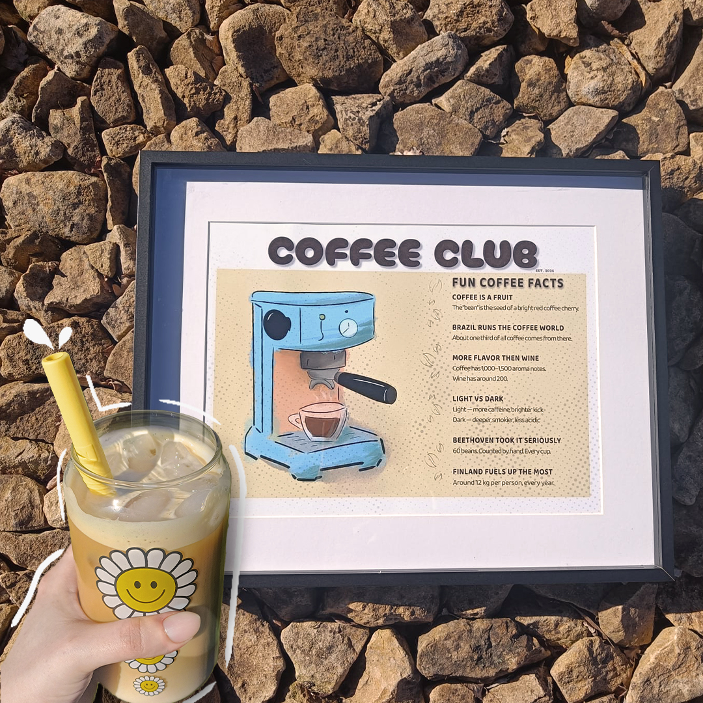

Vintage-inspired coffee poster for all coffee addicts, like me ☕️
Did you know these coffee facts? 🤎

Gemaakt met Adobe CC & Procreate

TikTok
Designing a coffee poster with coffee fun facts ☕️🤎 #designprocess #coffeeArt
Gemaakt met Adobe CC